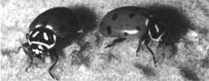
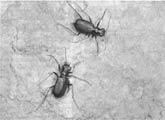
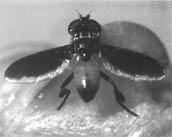
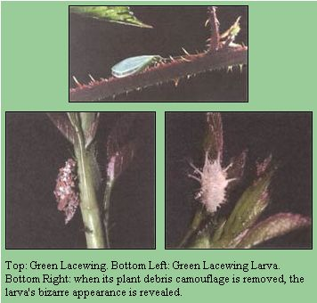
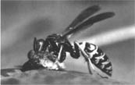
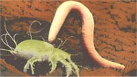

Managing beneficial bugs in your garden
Look around any natural garden - that is, any ecosystem undisturbed by human intervention - and what do you see? Are all the plants devastated by insect infestations? Are gophers the only surviving life forms? With the exception of climatic extremes such as deserts and arctic glaciers, wouldn't you expect to see a variety of life, from plants to insects, birds, and animals, coexisting?
The answers are, "no," "of course not," and "well, I certainly hope so!" Nature works in harmony with itself. The food chain follows a hierarchy: plants, plant eaters, and finally, plant-eater eaters. If one category is troubled, the whole system is affected. Not enough plants and the plant eaters starve; not enough plant eaters and the plant-eater eaters go hungry; not enough plant-eater eaters and the population of plant eaters expands until they eat up all the plants. A simple, yet easily disrupted balance.
So it is in your garden. By now you may have come to realize that you are not the only plant eater involved. There are plenty of others eager to get their share. So how does nature handle the problem? Of course - more plant-eater eaters!
Unless your garden has been saturated with poisonous chemicals, chances are that at any given moment scores of plant-eater eaters, or predators, are at work. Cats are catching mice, birds are devouring caterpillars, ladybugs are gobbling up aphids, and lacewings are munching on a variety of bugs. One of the best things you can do for your garden is to encourage this natural system. You can even help nature along by introducing beneficials into the garden.
But how to achieve this success, and what makes it a victory rather than a crushing defeat? A garden full of bugs is a boon instead of a bust when many of those bugs are beneficial insects - those that attack the bad-guy bugs that attack our crops. How you can achieve such a lofty goal is at once very simple and very demanding.
The number-one demand of beneficial insects is that you use no poisonous chemicals. Pesticide use is easily the primary reason that there are no more beneficial bugs at work today. Other requirements of beneficial bugs vary with the individual species, whether they be predator or parasite, but some general principles benefit all.
Diversify. Plant many different types of plants, particularly flowers and herbs. These supply beneficials with nectar and pollen necessary to many adult forms, as well as rest stops and breeding grounds.
Especially attractive are umbelliferous flowers, those with many tiny flowers arranged in tight umbels, such as members of the carrot family, dill, parsley, angelica, fennel, or Queen Anne's lace. Daisies, strawflowers, goldenrod, yarrow, petunias, cosmos, zinnias, nasturtiums, marigolds, and sunflowers also draw beneficials. Weeds, including lamb's-quarters, wild mustard, dandelion, nettle, pigweed, and knotweed are also important to beneficial insects. Many small-flowering herbs, including garden sage, thyme, oregano, lavender, catnip and other mints, rosemary, carroway, anise, coriander, sweet marjoram, and tansy (not ragwort) attract beneficials.
Intercrop. Mix up your planting so that plants that draw beneficials are located among those that need their protection.
Humidify. Many beneficials are tiny and lose their precious body moisture quickly. They require a habitat humid enough to prevent dehydration and keep them active. This can be established by placing plants close together to create a shaded, moist microenvironment. Misting or constant drip irrigation will also contribute to raising moisture levels.
If you plan to capture or buy and release bugs not native to your garden, be certain that you have targeted your pest problems. Though many predators have a wide array of hosts, some are quite specific, and if their hosts are not present they must either relocate or die. Time the release of beneficials so that there is a sustainable level of feed (for both adults and larvae - nectar as well as pests). At times you may need to feed them sugar water or products such as Bug Chow. Manufacturers of commercial products claim these enhance the bugs' reproductivity and performance. Temper the number of beneficials you release with the level of your infestation problems. Too few predators won't be able to control the number of pests, while too many may produce competition that could result in other beneficials winding up as dinner.
Suppliers of commercially available predators or parasites often recommend repeat or staggered releases to best take advantage of the hosts' life cycles.
Insect Categories
There are two categories of beneficial insects that operate in two different ways. They may be host-specific, which means they seek out the pests their livelihoods depend on; or they may be more generalized, using a variety of pests for their needs. The means by which they eradicate our pests may be through either straightforward predation - whereby the beneficial hunts down the vermin and devours it; or parasitic - whereby the adult form lays eggs on or in the host's body and the emerging larvae destroy the pest from the inside out.
Parasites are more apt to be host-specific, and the adults are more likely to be nectar or pollen eaters than the predatory larval forms. Host-specific beneficials will zero in on a problem pest immediately, whereas the more general feeders will attack whatever is handy. Your individual pest problems should indicate which would be the more useful in your situation.
Unfortunately, nature doesn't give a rip as to which insects we prefer in our gardens. Survival for many depends on a diverse diet, which may at times include other beneficial insects. Be sure you are releasing a solution to a problem or you may find yourself with one form of beneficial ridding your garden of other forms.
Though many beetles are bad news in the garden, a few have earned our appreciation. From the large ungainly ground beetle to the much adored ladybug (ladybird beetles), or ferocious soldier or tiger beetles, some of these bugs make dependable allies. Their habit of devouring insect pests make them formidable hunters in the garden.
Ground Beetles Lurking just beneath the soil surface a dark, heavily armored knight awaits. He is a ground beetle. Growing to a mere one inch in length, these black beetles are fierce predators of slugs, snails, and many pest larvae. They work the night shift, when their prey is most active. Adults lay eggs in the soil, producing just one generation per year.
Another ground beetle, known as the fiery searcher (Calosoma scrutator), is similar in habit and appearance. This one exudes a caustic substance that burns on contact. If ever you handle one, wear gloves. They search out and devour caterpillars and other soft-bodied larvae.
These beetles, or similar species, are found throughout North America. Collect some to overwinter. A jar with a couple inches of soil from the garden and some garden scraps should tide them over until spring. Then release them into your plot. Be sure to provide some sort of cover, such as a few flat rocks or boards.
Ladybugs, who may be responsible for the
entire concept of biological pest control
Ladybugs
These cute little gals may well be responsible for the entire concept of biological pest control. Not only are they credited with the early reclamation of the California citrus industry from the cotton-cushion scale, but they are nearly universally recognized by gardeners and accepted by even the faint of heart (bugwise).
Perhaps the abilities of ladybugs as a garden panacea have been exaggerated. Their appetites are limited mostly to aphids, scale, mites, mealybugs, whiteflies, and the eggs of some other insects. Though unquestionably helpful as predators, they alone can't keep most serious pest infestations at bay.
Ladybugs are less than 1/4" long, rounded, bright orange to red, with several black spots (the exact number depends on the variety). White markings dot the thorax (distinguishing them from the similar Mexican bean beetle), and they have a black head and legs. The larvae are even more voracious eaters than the adults, known to knock off around 40 aphids in an hour. In about 20 days from hatching, the larvae pupate to emerge as the ever-popular ladybug or ladybird beetles.
Some species of ladybug can be found almost anywhere in North America. Curiously, in the West especially, adults migrate to hibernate, spending their winter in the mountains. Scores of them will collect in a sheltered spot to spend the winter together; in the spring they return to other areas.
Tiger Beetles can grow up to
an inch long and feed on many
other kinds of insects and
spiders.
Soldier Beetles
These beetles are often said to resemble burned-out fireflies. One type, the downy leather-wing (Podabrus tomentosus), is dark with a whitish head and thorax. As the name implies, they appear to be covered with fine, downy white hairs. Adults grow to 1/2" long and feed on aphids. They are found throughout most of the United States and in southern Canada.
Another soldier beetle, the Pennsylvania leather-wing (Chauliognathus pennsylvanicus ), is limited to eastern North America. They are golden with black markings and are also about 1/2" long. These feed on grasshopper eggs, cucumber beetles, and an array of caterpillars.
Tiger Beetles
While this species is found primarily in the West, similar species occur throughout North America. They are metallic blue-green and can grow up to an inch long. Both the adults and spiny, humped, curved larvae prey on a variety of small insects and spiders.
Ambush Bugs
That wierd thing hiding behind that innocent flower blossom is an off-looking, though ruthlessly efficient hunter. When mites, scales, or thrips happen along his path, the ambush bug lives up to his name, and pounce! One less pest. Though only 3/8" long, he will sometimes take on wasps or bees and other beneficial insects.
Assassin Bugs
While not all that common in home gardens, hundreds of different species of assassins are found throughout the United States and Canada. Many a caterpillar, aphid, Mexican bean beetle, Colorado potato beetle, Japanese beetle, leafhopper, hornworm, and honeybee have met their fate between the bristly front legs of a hungry assassin.
If you find a couple of assassins in the garden, the best management practice is to let them be. They will tell you that themselves, for if molested, they bite, and it can bring a wince to the most seasoned hands. Sunflowers are good attractors for assassins (and other beneficial insects).
Big-eyed Bugs
This helpful predator scans Western gardens, searching for leafhoppers, aphids, Mexican bean beetles, and the eggs of various insects. The mere 1/4" long grayish-beige, oval-shaped, big-eyed bug is native to much of western North America. He boasts oversize "bug eyes" for which he is named. These bugs supplement their diets with various weeds and may be attracted to a patch of wild plants and flowers.
Damsel Bugs or Damsel Flies
Still another predator that stalks ground covers and other low plants is the damsel bug. Don't let the innocent-sounding name or their demure appearance mislead you. These bugs are well-versed killers. With long, slender hind legs and powerful, grasping forelegs, the dark, streamlined damsels grow only 1/4" long. Size is no handicap, however, as they put away their share of mites, aphids, leafhoppers, larvae, and other small plant pests. Some species are found throughout North America.
Soldier Bugs
Brown 1/2" long bugs, with snouts half as long as their bodies, stalk the stalks of your broccoli in search of cabbage loopers and imported cabbageworms. They also have an appetite for Mexican bean beetles and many other harmful insects. The mercenary larvae are just as ruthless killers as the adults, starting to hunt just days after hatching. They range throughout North America.
Syrphid or Hover Flies
Adult hover flies, with their striped abdomens, resemble wasps. They hover before flowers, buzzing loudly as they sip nectar, but unlike their look-alikes offer no threat of a sting. Green or tan, the worm-like larvae of these flies are gung-ho aphid eaters. A single larva can put away 1,000 aphids before changing into an adult. Adult female hover flies can contribute about 100 eggs each to your gardening effort. Besides aphids, any small, soft-bodied insects such as mealybugs, thrips, or leafhoppers may find themselves on the hover fly's menu.
These flies are also important as pollinators. They favor cosmos, coreopsis, gloriosa daisies, dwarf morningglories, marigolds, spearmint, baby-blue-eyes, and the herb meadowfoam. An assortment of these should draw some of the nearly 1,000 species of hover flies found throughout North America to your plot.
Robber Flies
A loud buzz, an acrobatic aerial swoop, and snap-another airborne pest knocked from the sky. Robber flies are up to 3/4" long, powerful, and ugly. These hairy-faced gray hunters take down a variety of flying insects, from beetles and butterflies to leafhoppers and grasshoppers, as well as a few unlucky beneficials. While adults are launching their winged attack, the white larvae are worming their way into the eggs and grubs of pests under the soil surface.
With many species found throughout North America (most east of the Rocky Mountains in the United States and Canada), a constant supply of flowering plants should keep a few at work in your garden.
A Tachnid fly resting on a
summer squash flower. They are
among the most important North
American pest-control parasite.
Tachinid Flies
The tachinid flies often resemble black houseflies, but are occasionally found in shades of yellow, red, or brown. These bristly little flies are often seen around leaves and flowers, where they feed on nectar or the honeydew secreted by certain insect pests. Nearly 1,300 different species exist throughout North America, and among them are probably the most important pest-control parasites.
The larvae of these flies invade and excavate the bodies of their hosts. Some are deposited as live maggots within the host's body by the moth fly; others are laid as eggs on foliage or on the body of the host. The larvae feed on many beetles, bugs, caterpillars, and grasshoppers. The list includes European corn borers, cutworms, armyworms, and Japanese and Mexican bean beetles. Adults are drawn to buckwheat - a small patch should ensure a welcome population of tachinid flies.
Green Lacewing
A delicate, fragile-looking, slender, green insect, the green lacewing feeding on pollen or nectar gives no clue as to the voracious appetite of its young, also known as aphid lions. But this hungry larva is one of the best garden predators in existence for aphids, spider mites, mealybugs, leafhoppers, thrips, or even corn earworm and other caterpillar eggs.
Various species are native throughout North America and can be lured to the garden by planting a variety of flowering plants such as angelica, red cosmos, coreopsis, tansy, or goldenrod. They also appreciate the wild Queen Anne's lace, a weed you may learn to tolerate in modest numbers. Adults also feed on honeydew and prey on the bugs that produce it. Though considered somewhat more stable than ladybugs, lacewings still require sufficient food, in the form of pollen-bearing plants for adults and prey as well as accessible water - or they will leave in search of it.
Praying Mantis
Next to the beloved ladybug, the praying mantis is perhaps the most recognizable insect predator. Their large size - up to five inches - and strange appearance make them fascinating to watch. They come in shades of dull brown to green and are long and slender with strong, enlarged front legs designed for grasping prey.
Included in their dietary repertoire are aphids, various beetles and bugs, leafhoppers, flies, caterpillars, butterflies, and, sadly, beneficials such as bees and wasps. They even prey on each other. The larger they grow, the more likely they are to take on bigger game, not excluding small vertebrates such as salamanders or frogs or even a feisty shrew. Even so, they are not especially aggressive hunters. They prefer to wait patiently for whatever comes their way.
A wasp eating cabbage-moth
larva. Their size (often over one-
inch long and their bright,
contrasting markings make them
hard to miss.
A vast array of wasps diligently scour even the tiniest garden plot in search of insect pests. Some to be aware of are the predatory wasps (the kinds that sting) and the parasitic trichogramma, braconid, chalcid, and ichneumon wasps (the kinds that don't).
Trichogramma Wasps
Found throughout North America, the trichogramma wasps are tiny pest-control agents. Several species are known to parasitize more than 200 different pests, including cabbage loopers and cutworms, among other caterpillars and insects. Using her specialized ovipositor, the wasp lays her eggs inside the body of the host, effectively preventing the development of one more pest and releasing as many as 25 new wasps from one parasitized victim.
These tiny wasps, like other parasitic wasps, are harmless to people or animals. They are so small - barely 1/32" long - that when their minuscule eggs are sold, thousands arrive on a one-inch square card that resembles a piece of fine sandpaper. Trichogramma pretiosum is the species most commonly sold for control of garden pests.
Braconid Wasps
Picture a large, fat, lumbering tomato hornworm perched halfway up a tomato-plant stalk. You're just about to pluck this munching menace when you notice something a little bizarre. Though he is chomping contentedly on your prize Better Boy, this hornworm is one you will definitely leave alone. His plump body is covered with tiny silken cocoons, the pupal stages of one species of braconid wasp.
Several species of braconid wasps exist. Some are very specific in the hosts they use, others victimize a range of insects. Those cocoons attached to the hornworm are the aftermath of the wasps having completed their larval state inside its body. Not only do they ultimately cause the demise of that one hornworm, but more importantly, that particular hornworm serves as the launching site for many more of these beneficial parasites. Other species zero in on cabbageworms and other pest species of moths.
The various kinds are found throughout North America. They range from yellowish to red or black in color and from a mere 1/10" up to 1/4" in size. They possess wicked-looking ovipositors, which resemble an exaggerated, long, curving stinger. But fear not, for this weapon is used solely for depositing eggs upon or inside the host.
The adults feed on nectar and can be drawn by small, single-blossomed wildflowers or flowering herbs. Provide a varied assortment to ensure blooms throughout the season.
Chalcid Wasps
Chalcid wasps are effective parasites against aphids, scales, mealybugs, and the larvae of many flying insects, such as beetles, moths, and butterflies. Found throughout North America, they are extremely sensitive to environmental factors such as temperature, humidity, and even dusty air. The level or control they can provide depends on favorable conditions. Like other parasitic wasps, the adults require small blossomed, single-blooming flowers for nectar. Including these in your gardenscape will help to attract these wasps.
Ichneumon Wasps
Though there are many species, on average they are streamlined, dark wasps with clear wings and long antennae. An oversize ovipositor is used only for inserting eggs into a host. Adults feed on host larvae as well as pollen and nectar. Along with their carnivorous larvae, they are effective parasites against many caterpillars. Ichneumon wasps are found throughout North America.
Predatory Wasps
Not all wasps are tiny or easily overlooked. Some, such as the mud daubers and paper - or social - wasps, can make themselves painfully obvious.The adults take back portions of their kill (caterpillars, spiders, and many other insects are fair game) to share with the rest of the colony. Those same stingers are used, not infrequently, to remind us humans that we are not the only workers tending the garden. Their size, some over an inch long, and their bright, contrasting yellow or white and black markings make them hard to miss.
Mud daubers are solitary wasps; they do not form colonies like the paper wasps. Instead, females lay eggs in individual cells that each plasters together with mud. They provide each cell in the nest with a paralyzed insect to nourish the larvae as they hatch and grow. Mud daubers are harmless to people, as they are not easily provoked to sting, but are serious enemies to insects.
More familiar too many of us are the paper, or social, wasps. These include the various species of hornets and yellow jackets, all of which are insect predators. They range in size from 1/2" to 1" or more in length, and, unlike the solitary mud dauber, they create large, highly organized colonies, which they fiercely defend. Treat any foraging wasps with quiet respect and you should be able to work side by side.
Adults also require pollen and are particularly fond of flowers from the daisy family. Oxeye daisies, strawflowers, black-eyed Susan, and even goldenrod and yarrow will draw predatory wasps to your garden. Ripe fruits and berries are irresistible to them.
OTHER BENEFICIAL BUGS New forms of predatory and parasitic bugs are being discovered and experimented with every day. There may well never be an end to the possibilities, as insects on both sides of the bug wars continue to adapt and change. Three more that are fairly new weapons in the biogardener's defense arsenal are encarsia formosa, beneficial nematodes, and predatory mites.
Encarsia Formosa Most often recommended for greenhouse whitefly control, this tiny wasp is native to most of North America and can be established in home gardens. Adults are only about 1/40" long. Almost every one is a female, capable of producing more females without bothering with a male. They do best in temperatures over 70°F, and what they do best is consume whiteflies - nothing but.
Once they have done in up to 90% of the pest's population, their own numbers will decline if not given a little help. If used inside a greenhouse, lower the temperature below 70°F. and remove any whitefly traps. (You may want to leave one in place to monitor whitefly numbers.) A few whiteflies can't do any real damage and are essential to the survival of the parasites.
Place a few leaves infested with whiteflies and the parasites next to a rose geranium plant. Substances given off by the geranium cause the metabolism of both species to slow. Many people have had success overwintering the parasites in this way, then releasing them into the greenhouse or garden the following spring
A Nematode worm investigating the
back of a meal mite. Some 80,000
species of Nematodes are known
Nematodes
Not too long ago, any gardener familiar with these unseen creatures could tell you that nothing good could possibly follow that word. Insidious, destructive, and relentless, it's precisely those same lovely qualities that make beneficial nematodes so endearing.
Almost any insect pest that spends any time at all on or beneath the ground is vulnerable to attack by the tiny insect parasites Neoplectana carpocapsae and Heterorhabditis heliothidis. In the soil, these nematodes hunt down borers, root weevils, cutworms, beetle larvae, cabbage roots maggots, wireworms, and much more.
Sold in the active juvenile stage, they are mixed with water and sprinkled along garden rows and at the base of plants. They must be kept moist to survive, and will keep in the refrigerator for up to two months.
Predatory Mites
Another bug not usually considered to be on our side is the mite. But at least four species of the genus Persimilis are more than willing to feast on red or two-spotted spider mites. They are extremely sensitive to temperature and humidity and are marketed for use indoors rather than outdoors. However, if the temperatures in your area don't usually fall below 40°F during the growing season and humidity is not too low, you may wish to consider these little guys if you have a problem with their cousins.
Editor's Note: Rhonda Massingham Hart is the author of the best-seller Bugs, Slugs & Other Thugs: Controlling Garden Pests Organically, from which this material is excerpted. This book covers all types of pests - from coyotes to crows to kids - and offers organic control solutions. It is available for $9.95 postpaid from Storey Communications, Schoolhouse Rd., Pownal, VT 05261; 800/827-8673. A former nursery proprietor, Rhonda Massingham Hart lives in Chattaroy, Washington.
|
Ladybugs, who may be responsible for the entire concept of biological pest control |
 Tiger Beetles can grow up to an inch long and feed on many other kinds of insects and spiders. |
 A Tachnid fly resting on a summer squash flower. They are among the most important North American pest-control parasite. |
|
 A wasp eating cabbage-moth larva. Their size (often over one-inch long and their bright, contrasting markings make them hard to miss. |
 A Nematode worm investigating the back of a meal mite. Some 80,000 species of Nematodes are known |
 |
|
 |
|
|